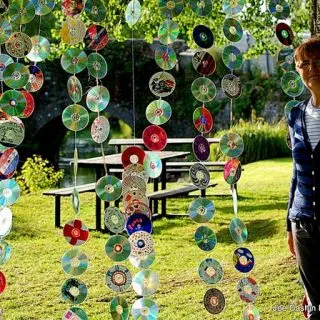

#1. Keyboard Key Magnets
How much waste do you need?
- Old keyboard
- small magnets
- Hot Glue
- Remove keys from an old keyboard
- attach magnets to the back of keys using hot glue
- These magnets can hold notes or pictures on your fridge.
#2. Motherboard Wall Clock
How much waste do you need?
- Old motherboard
- clock mechanism kit.
- Remove the components from the motherboard, cut it to a desired shape
- ttach a clock mechanism kit to create a stylish wall clock.
#3.CD/DVD Wind Chimes

How much waste do you need?
- Old CDs/DVDs
- string
- Beads
- Cut CDs/DVDs into smaller pieces, drill holes in them
- Thread them onto string
- adding beads between each piece.
- Hang the string to create a beautiful wind chime.
#4.Cassette Tape Pencil Holder
How much waste do you need?
- Old cassette tapes
- hot glue.
- Open cassette tapes and remove the spools
- Glue the tape cases together to create a pencil holder.
#5.Metal Bottle Cap Coasters:
How much waste do you need?
- Metal bottle caps
- epoxy resin.
- Arrange cleaned bottle caps in a coaster-sized pattern,
- pour epoxy resin over them
- and let it cure to create sturdy coasters.
#6.Tin Can Chimes
Use boring old tin cans to add music to your home.
How much waste do you need?
- Tin cans with lids for 3 or more
- Nail and hammer
- Washers: One for every tin
- Wool string
- Paintbrushes and paints
- Glitter
- You can paint the cans with different colors or add glitter to them.
- After they are dry, use the nail and hammer to make holes at the bottom of each can.
- String a long length of wool through the holes. Attach the washers to the string at the end.
- String a long length of wool through the holes. Attach the washers to the string at the end.
- The cans should be hung so that they don’t hit or overlap each other when the wind blows. Ta-da, you have a brand new wind chime. Or should we say Tin chime?
#7.Tin Can Lanterns Ideas
Make a lantern from an old soda can or bean for the holiday season. This project will require your assistance.
How much waste do you need?
- Tin can
- Nail and Hammer
- Wire
- Pliers
- Lights
- Paint
- Let the can dry after cleaning it.
- Put the can in the freezer and fill it with water. Take the can out of the freezer. Then, poke two holes on each side.
- ttach the wire to the holes with a handle Use hammers and nails to make various holes around the can. You can make a pattern or go wild with your holes.
- Use vibrant, fun colors to paint the outside and inside of the cans.
- To make lanterns out of them, put fairy lights and tea light candles into them once they are dry